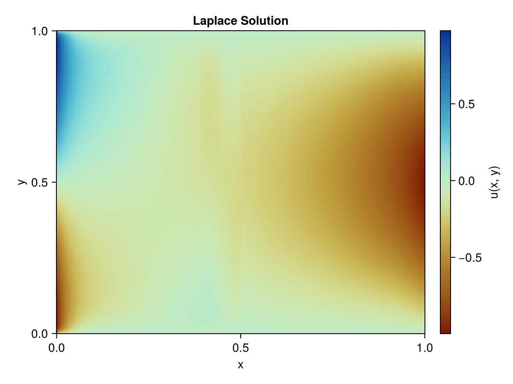
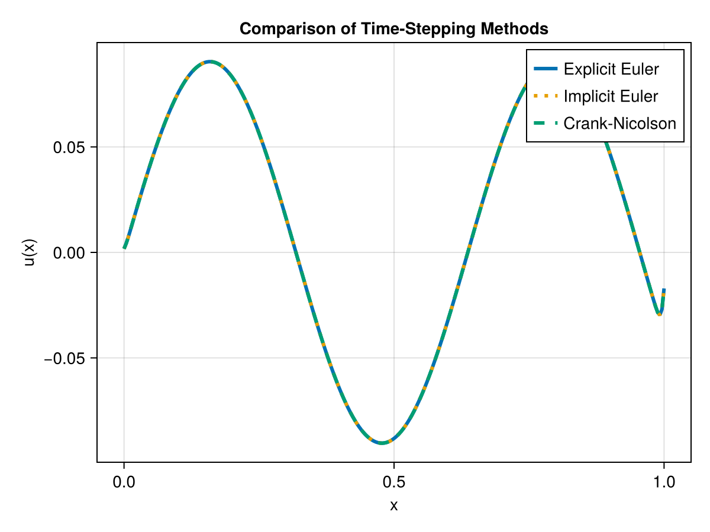
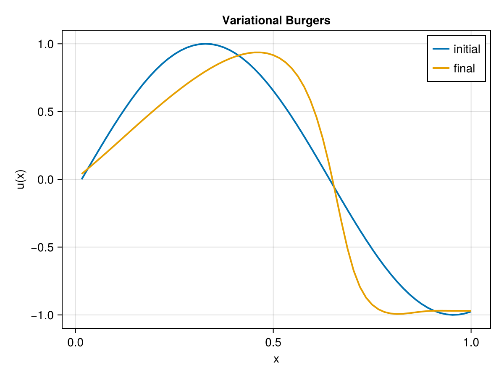

Examples
Partial differential equations
Let's consider the following 2D partial differential equation
\[\Delta u(x,y) = f(x,y),\]
where $\Delta$ is the Laplacian operator, $u(x,y)$ is the unknown function, and $f(x,y)$ is a given function. In this example we assume $f(x,y)=0$ using Dirichlet-Dirichlet boundary conditions given by $u(0,y) = \cos(\pi y)$, $u(1,y) = \sin(y)$.
We want to solve this equation using quantics tensor trains (QTTs). We start by defining the dimensions and the resolution of the grid. Lets say we want $2^{10}$ points in each dimension, which gives us a grid of $1024 \times 1024$ points on a $[0,1]\times [0,1]$ grid.
using TensorTrainNumerics
using CairoMakie
d = 10
a = 0.0
b = 1.01.0We follow the same convention as in [18] where we define the finite difference operator using the following inputs
h = (b-a)/(2^d)
p = 1.0
s = 0.0
v = 0.0
α = h^2*v-2*p
β = p + h*s/2
γ = p-h*s/2
Δ = toeplitz_to_qtto(α, β, γ, d)MPO{Float64} with 10 sites
Physical dims : (2, 2, 2, 2, 2, 2, 2, 2, 2, 2)
Bond dims : [1, 3, 3, 3, 3, 3, 3, 3, 3, 3, 1]
Orthogonality : noneTo get the 2D Laplacian operator, we need to take the Kronecker product of the 1D Laplacian operator with the identity.
A = Δ ⊗ id_tto(d) + id_tto(d) ⊗ ΔMPO{Float64} with 20 sites
Physical dims : (2, 2, 2, 2, 2, 2, 2, 2, 2, 2, 2, 2, 2, 2, 2, 2, 2, 2, 2, 2)
Bond dims : [1, 4, 4, 4, 4, 4, 4, 4, 4, 4, 2, 4, 4, 4, 4, 4, 4, 4, 4, 4, 1]
Orthogonality : noneTo build the boundary vector we take the Kronecker product with the QTT basis vectors and define some random initial guess for the solution.
b = qtt_cos(d) ⊗ qtt_basis_vector(d, 1) + qtt_sin(d) ⊗ qtt_basis_vector(d, 2^d)
initial_guess = rand_tt(b.ttv_dims, b.ttv_rks)MPS{Float64} with 20 sites
Physical dims : (2, 2, 2, 2, 2, 2, 2, 2, 2, 2, 2, 2, 2, 2, 2, 2, 2, 2, 2, 2)
Bond dims : [1, 4, 4, 4, 4, 4, 4, 4, 4, 4, 2, 2, 2, 2, 2, 2, 2, 2, 2, 2, 1]
Orthogonality : noneWe solve the linear system using DMRG
x_dmrg = dmrg_linsolve(A, b, initial_guess; sweep_count=50,tol=1e-15)MPS{Float64} with 20 sites
Physical dims : (2, 2, 2, 2, 2, 2, 2, 2, 2, 2, 2, 2, 2, 2, 2, 2, 2, 2, 2, 2)
Bond dims : [1, 2, 4, 8, 16, 16, 16, 16, 16, 16, 8, 8, 8, 8, 8, 8, 8, 8, 4, 2, 1]
Orthogonality : center @ site 1And we reshape the solution to a 2D array for visualization
solution = reshape(qtt_to_function(x_dmrg), 2^d, 2^d)
xes = collect(range(0,1,length=2^d))
yes = collect(range(0,1,length=2^d))
fig = Figure()
cmap = :roma
ax = Axis(fig[1, 1], title = "Laplace Solution", xlabel = "x", ylabel = "y")
hm = heatmap!(ax, xes, yes, solution; colormap = cmap)
Colorbar(fig[1, 2], hm, label = "u(x, y)")
fig
Time-stepping
We can also solve time-dependent PDEs using the QTT framework. In this example we will use the explicit Euler method, the implicit Euler method and the Crank-Nicolson scheme.
using TensorTrainNumerics
using CairoMakie
d = 8
h = 1/d^2
A = h^2*toeplitz_to_qtto(-2,1.0,1.0,d)
xes = collect(range(0.0, 1.0, 2^d))
u₀ = qtt_sin(d,λ=π)
init = rand_tt(u₀.ttv_dims, u₀.ttv_rks)
steps = collect(range(0.0,10.0,1000))
solution_explicit, error_explicit = euler_method(A, u₀, steps; return_error=true)
solution_implicit, rel_implicit = implicit_euler_method(A, u₀, init, steps; return_error=true)
solution_crank, rel_crank = crank_nicholson_method(A, u₀, init, steps; return_error=true, tt_solver="mals")
fig = Figure()
ax = Axis(fig[1, 1], xlabel = "x", ylabel = "u(x)", title = "Comparison of Time-Stepping Methods")
lines!(ax, xes, qtt_to_function(solution_explicit), label = "Explicit Euler", linestyle = :solid, linewidth=3)
lines!(ax, xes, qtt_to_function(solution_implicit), label = "Implicit Euler", linestyle = :dot, linewidth=3)
lines!(ax, xes, qtt_to_function(solution_crank), label = "Crank-Nicolson", linestyle = :dash, linewidth=3)
axislegend(ax)
fig
And print the relative errors
println("Relative error for explicit Euler: ", error_explicit)
println("Relative error for implicit Euler: ", rel_implicit)
println("Relative error for Crank-Nicolson: ", rel_crank)Relative error for explicit Euler: 2.725439444798953e-5
Relative error for implicit Euler: 4.831384543816122e-6
Relative error for Crank-Nicolson: 4.831484610547443e-6Discrete Fourier Transform
Based on [13] we also have access to the discrete Fourier transform (DFT) in QTT format. Below is an example of how to use it. You can use the fourier_qtto function to create a QTT representation of the Fourier transform operator where the sign parameter determines if its the Fourier transform or the inverse Fourier transform.
using TensorTrainNumerics
using Random
d = 10
N = 2^d
K = 50
sign = -1.0
normalize = true
Random.seed!(1234)
r = 12
coeffs = randn(r) .+ 1im * randn(r)
f(x) = sum(coeffs .* cispi.(2 .* (0:(r - 1)) .* x))
F = fourier_qtto(d; K = K, sign = -1.0, normalize = true)
x_qtt = function_to_qtt_uniform(f, d)
y_qtt = F * x_qttMPS{ComplexF64} with 10 sites
Physical dims : (2, 2, 2, 2, 2, 2, 2, 2, 2, 2)
Bond dims : [1, 102, 204, 357, 459, 510, 561, 408, 204, 102, 1]
Orthogonality : noneVariational solver
You can also solve differential equations by optimizing a variational functional. Below is an example of how to use the variational_solver function to solve Burgers equation based on - OptimKit.jl
using TensorTrainNumerics
using OptimKit
using CairoMakie
import TensorTrainNumerics: dot, orthogonalize
orth2(x) = orthogonalize(orthogonalize(x; i=1); i=x.N)
d = 6
L = 1.0
T = 1.0
Nt = 1000
ν = 0.01
N = 2^d
dx = L / N
dt = T / Nt
Dx = 1/dx * ∇(d)
Dxx = 1/dx^2 * Δ_DN(d)
u₀ = qtt_sin(d, λ = π/2)
x0 = orth2(u₀)
v = u₀
v_ref = Ref(u₀)
"""
residual: (u - v)/dt + 1/2*∂x(u²) + ν uₓₓ
"""
function burgers_residual(u)
t1 = (u - v_ref[]) * (1/dt)
nl = 0.5 * orth2(Dx * (u ⊕ u))
lin = Dxx * u
R = t1 + nl + ν * lin
return orth2(R)
end
"""
gradient of J = 1/2 ∫∫ |R|² dx dt
"""
function burgers_cost_grad(u)
R = burgers_residual(u)
J = 0.5 * dx * dt * dot(R, R)
g = (1/dt) * R
g += ν * (Dxx * R)
Dxu = orth2(Dx * u)
g += orth2(Dxu ⊕ R)
g += orth2(Dx * orth2(u ⊕ R))
g = (dx * dt) * g
return J, orth2(g)
end
solver = GradientDescent(verbosity=2, gradtol=1e-6)
v_ref[] = x0
for _ in 1:150
x, _, _, _, _ = optimize(burgers_cost_grad, v_ref[], solver)
v_ref[] = orth2(x)
end
vals_init = qtt_to_function(x0)
vals_final = qtt_to_function(v_ref[])
xes = (1:N) ./ N
fig = Figure()
ax = Axis(fig[1,1], xlabel="x", ylabel="u(x)", title="Variational Burgers")
lines!(ax, xes, vals_init, label="initial", linewidth=2)
lines!(ax, xes, vals_final, label="final", linewidth=2)
axislegend(ax)
fig
TT-cross approximation
The TT-cross algorithm allows you to approximate a high-dimensional tensor from function calls. Below is an example of how to use the tt_cross function to
using LinearAlgebra
using CairoMakie
using TensorTrainNumerics
function sin_6d(coords::Matrix{Float64})
return vec(sin.(sum(coords, dims = 2)))
end
n = 8
d = 6
domain = [collect(range(0.0, π, length = n)) for _ in 1:d]
alg = MaxVol(tol = 1.0e-8, maxiter = 20, verbose = true)
tt_maxvol = tt_cross(sin_6d, domain, alg; ranks = 4);
tensor_approx = ttv_to_tensor(tt_maxvol);
tensor_exact = zeros(Float64, ntuple(_ -> n, d));
for idx in CartesianIndices(tensor_exact)
coords = [domain[k][idx[k]] for k in 1:d]
tensor_exact[idx] = sin(sum(coords))
end
error = norm(tensor_approx - tensor_exact) / norm(tensor_exact)
max_error = maximum(abs.(tensor_approx - tensor_exact))1.4432899320127035e-15And we can check the difference at random indices
println("Relative error: ", error)
for _ in 1:5
idx = Tuple(rand(1:n) for _ in 1:d)
coords = [domain[k][idx[k]] for k in 1:d]
exact_val = sin(sum(coords))
approx_val = tensor_approx[idx...]
println(" Index $idx: exact=$(round(exact_val, digits = 8)), approx=$(round(approx_val, digits = 8)), diff=$(abs(exact_val - approx_val))")
endRelative error: 4.711724959735202e-16
Index (3, 2, 4, 3, 4, 8): exact=0.97492791, approx=0.97492791, diff=1.1102230246251565e-16
Index (2, 5, 2, 7, 5, 3): exact=0.97492791, approx=0.97492791, diff=5.551115123125783e-16
Index (3, 6, 5, 6, 8, 2): exact=-0.97492791, approx=-0.97492791, diff=4.440892098500626e-16
Index (4, 2, 6, 1, 8, 4): exact=0.78183148, approx=0.78183148, diff=1.1102230246251565e-16
Index (4, 6, 3, 6, 1, 1): exact=0.43388374, approx=0.43388374, diff=4.440892098500626e-16